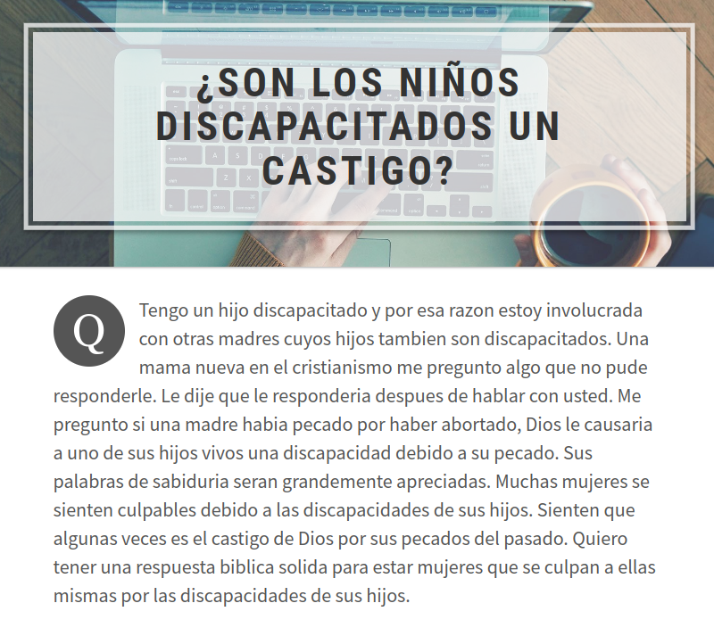
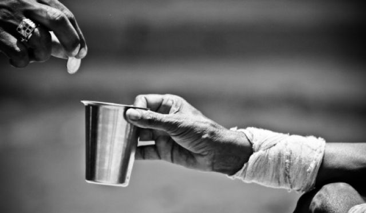
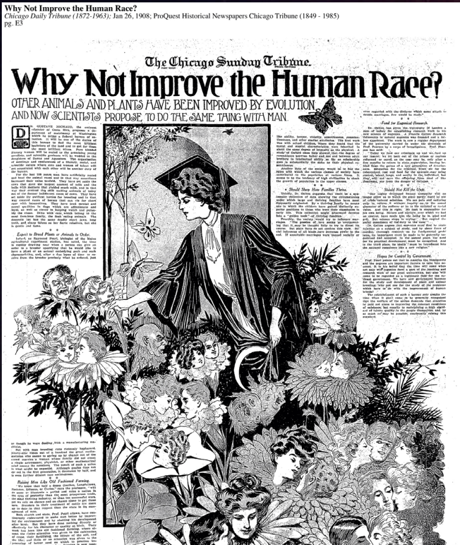
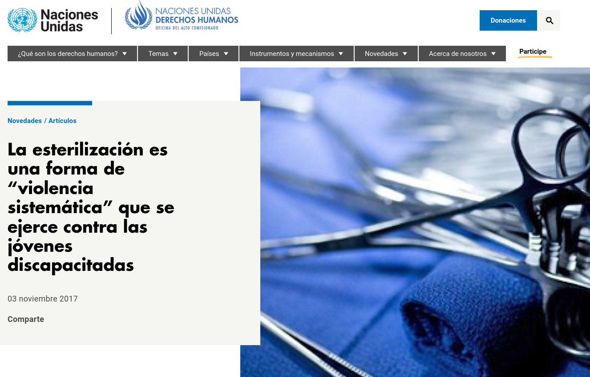
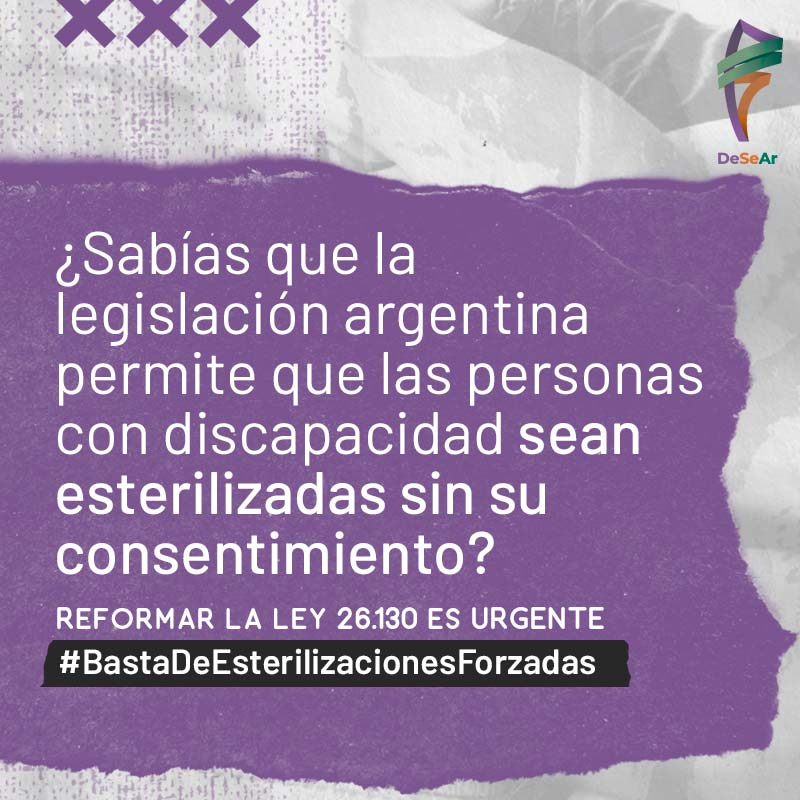
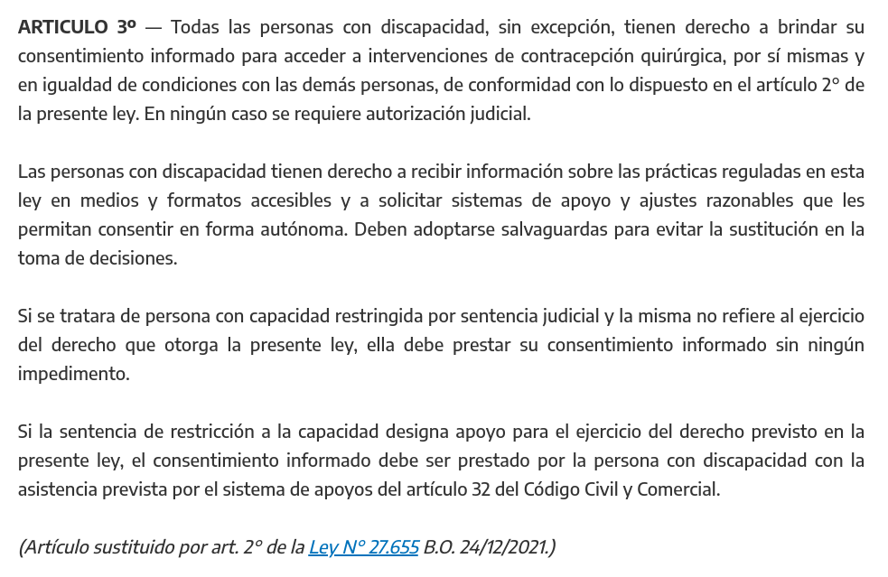
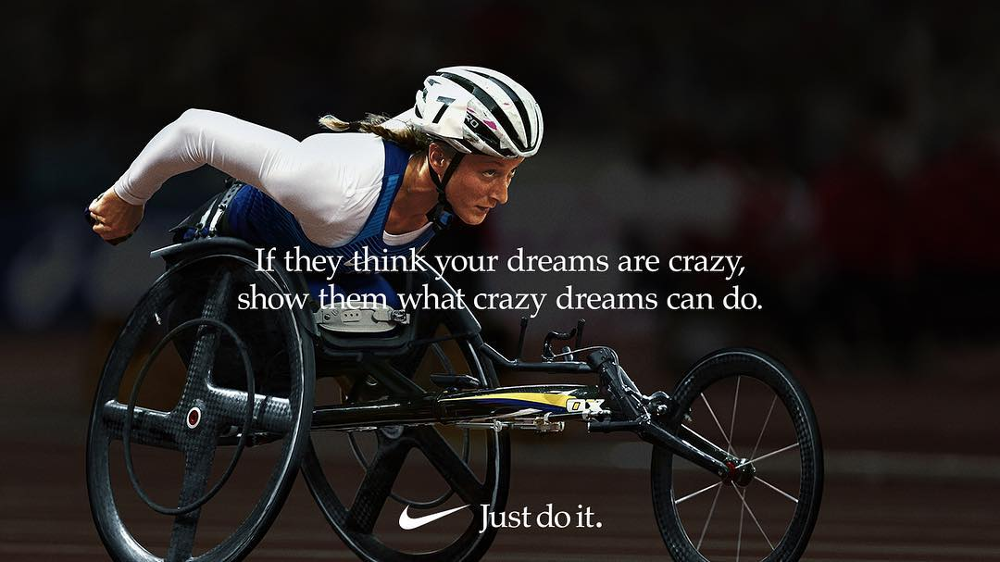

<!DOCTYPE html>
<html lang="en">
  <head>
    <meta charset="utf-8" />
    <meta name="viewport" content="width=device-width, initial-scale=1.0, maximum-scale=1.0, user-scalable=no" />

    <title></title>
    <link rel="stylesheet" href="dist/reveal.css" />
    <link rel="stylesheet" href="dist/theme/league.css" id="theme" />
    <link rel="stylesheet" href="plugin/highlight/monokai.css" />
	<link rel="stylesheet" href="css/layout.css" />
	<link rel="stylesheet" href="plugin/customcontrols/style.css">


    <script defer src="dist/fontawesome/all.min.js"></script>

	<script type="text/javascript">
		var forgetPop = true;
		function onPopState(event) {
			if(forgetPop){
				forgetPop = false;
			} else {
				parent.postMessage(event.target.location.href, "app://obsidian.md");
			}
        }
		window.onpopstate = onPopState;
		window.onmessage = event => {
			if(event.data == "reload"){
				window.document.location.reload();
			}
			forgetPop = true;
		}

		function fitElements(){
			const itemsToFit = document.getElementsByClassName('fitText');
			for (const item in itemsToFit) {
				if (Object.hasOwnProperty.call(itemsToFit, item)) {
					var element = itemsToFit[item];
					fitElement(element,1, 1000);
					element.classList.remove('fitText');
				}
			}
		}

		function fitElement(element, start, end){

			let size = (end + start) / 2;
			element.style.fontSize = `${size}px`;

			if(Math.abs(start - end) < 1){
				while(element.scrollHeight > element.offsetHeight){
					size--;
					element.style.fontSize = `${size}px`;
				}
				return;
			}

			if(element.scrollHeight > element.offsetHeight){
				fitElement(element, start, size);
			} else {
				fitElement(element, size, end);
			}		
		}


		document.onreadystatechange = () => {
			fitElements();
			if (document.readyState === 'complete') {
				if (window.location.href.indexOf("?export") != -1){
					parent.postMessage(event.target.location.href, "app://obsidian.md");
				}
				if (window.location.href.indexOf("print-pdf") != -1){
					let stateCheck = setInterval(() => {
						clearInterval(stateCheck);
						window.print();
					}, 250);
				}
			}
	};


        </script>
  </head>
  <body>
    <div class="reveal">
      <div class="slides"><section  data-markdown><script type="text/template"><!-- .slide: class="drop" -->
<div class="" style="position: absolute; left: 0px; top: 0px; height: 700px; width: 960px; min-height: 700px; display: flex; flex-direction: column; align-items: center; justify-content: center" absolute="true">

## Gubernamentalidad Reproductiva

### La confluencia del riesgo y la vulnerabilidad en la parentalidad discapatidada (PD)


Laura Sanmiquel-Molinero, Joan Pujol-Tarrés, Marisela Montenegro-Martínez
</div></script></section><section  data-markdown><script type="text/template"><!-- .slide: class="drop" -->
<div class="" style="position: absolute; left: 0px; top: 0px; height: 700px; width: 960px; min-height: 700px; display: flex; flex-direction: column; align-items: center; justify-content: center" absolute="true">

# Gubernamentalidad y Modelos de Discapacidad


[comment]: # ( Poder Pastoral {{{ )
</div></script></section><section ><section data-markdown><script type="text/template"><!-- .slide: class="drop" -->
<div class="" style="position: absolute; left: 0px; top: 0px; height: 700px; width: 960px; min-height: 700px; display: flex; flex-direction: column; align-items: center; justify-content: center" absolute="true">

# El poder pastoral
</div></script></section><section data-markdown><script type="text/template"><!-- .slide: class="drop" -->
<div class="" style="position: absolute; left: 0px; top: 0px; height: 700px; width: 960px; min-height: 700px; display: flex; flex-direction: column; align-items: center; justify-content: center" absolute="true">

* Basada en la metáfora del pastor/rebaño (sobre la población en lugar del territorio).
* Las técnicas individualizadas posteriormente inscritas en el estado moderno.
* Cada persona debe ser dirigida a su salvación a través de una diaria y minuciosa obediencia.
* Multiplicación y diversificación de técnicas en diversos dominios de la vida: pedagogía, higiene, pobreza y vida doméstica.
* Ejercer el poder a través del cuidado.
</div></script></section><section data-markdown><script type="text/template"><!-- .slide: class="drop" -->
<div class="" style="position: absolute; left: 0px; top: 0px; height: 700px; width: 960px; min-height: 700px; display: flex; flex-direction: column; align-items: center; justify-content: center" absolute="true">

### Modelo Moral

Discapacidad como señal de debilidad moral.
</div></script></section><section data-markdown><script type="text/template"><!-- .slide: class="drop" -->
<div class="" style="position: absolute; left: 0px; top: 0px; height: 700px; width: 960px; min-height: 700px; display: flex; flex-direction: column; align-items: center; justify-content: center" absolute="true">

> “las personas con discapacidad mental (...) no cuentan con suficiente capacidad para criticar las conductas u opiniones que les indican las personas que los rodean; ésta, entre otras, es una de las causas que pueden llevarlos a constituir un grupo vulnerable de abusos dentro de la sociedad”.

Castro & Zúñiga (2002)
</div></script></section><section data-markdown><script type="text/template"><!-- .slide: class="drop" -->
<div class="" style="position: absolute; left: 0px; top: 0px; height: 700px; width: 960px; min-height: 700px; display: flex; flex-direction: column; align-items: center; justify-content: center" absolute="true">

"(…) En el caso de la discapacidad mental es importante destacar que las personas con déficit intelectual son muy sugestionables, lo que repercute en su actuación. Ellos no cuentan con suficiente capacidad para criticar las conductas u opiniones que les indican las personas que los rodean; ésta, entre otras, es una de las causas que pueden llevarlos a constituir un grupo vulnerable de abusos dentro de la sociedad".

Castro & Zúñiga (2002)
</div></script></section><section data-markdown><script type="text/template"><!-- .slide: class="drop" -->
<div class="" style="position: absolute; left: 0px; top: 0px; height: 700px; width: 960px; min-height: 700px; display: flex; flex-direction: column; align-items: center; justify-content: center" absolute="true">


</div></script></section><section data-markdown><script type="text/template"><!-- .slide: class="drop" -->
<div class="" style="position: absolute; left: 0px; top: 0px; height: 700px; width: 960px; min-height: 700px; display: flex; flex-direction: column; align-items: center; justify-content: center" absolute="true">

### Modelo Caritativo  

* Discapacidad como tragedia, desgracia, que debe ser atenuada o borrada con generosidad.
* Sujeto desvalido que necesita ser cuidado caritativamente.


</div></script></section><section data-markdown><script type="text/template"><!-- .slide: class="drop" -->
<div class="" style="position: absolute; left: 0px; top: 0px; height: 700px; width: 960px; min-height: 700px; display: flex; flex-direction: column; align-items: center; justify-content: center" absolute="true">

Entrevista a personal médico:

> "hay mucha gente que abusa, que están enfermos y lo único que buscan es aprovecharse y si ellas [mujer discapacitada] están tan necesitadas de afecto pues ya sabes... por eso es básico el tema y ayudarlas en eso, que <b>midan riesgos</b>".

Cruz-Pérez (2015)

[comment]: # ( }}} )

[comment]: # ( Poder Disciplinar {{{ )
</div></script></section></section><section ><section data-markdown><script type="text/template"><!-- .slide: class="drop" -->
<div class="" style="position: absolute; left: 0px; top: 0px; height: 700px; width: 960px; min-height: 700px; display: flex; flex-direction: column; align-items: center; justify-content: center" absolute="true">

# Disciplina
</div></script></section><section data-markdown><script type="text/template"><!-- .slide: class="drop" -->
<div class="" style="position: absolute; left: 0px; top: 0px; height: 700px; width: 960px; min-height: 700px; display: flex; flex-direction: column; align-items: center; justify-content: center" absolute="true">

* Crea un cuerpo útil, inteligible, manipulable y analizable.
* Cuerpos dóciles a los que puede someter, usar, transformar y mejorar.
* Micro-física del poder: distribución del espacio, gestión de las actividades, rutinas, maximizar la eficiencia individual. 
* Función normalizadora: examinar y juzgar al sujeto comparándolo respecto a la norma a través de rituales de verdad. **Norma capacitista**.
</div></script></section><section data-markdown><script type="text/template"><!-- .slide: class="drop" -->
<div class="" style="position: absolute; left: 0px; top: 0px; height: 700px; width: 960px; min-height: 700px; display: flex; flex-direction: column; align-items: center; justify-content: center" absolute="true">

### Modelo Médico

* Discapacidad como enfermedad o condición curable y/o tratable.
* Históricamente, ¿cuáles han sido las consecuencias del modelo médico para la PD?
</div></script></section><section data-markdown><script type="text/template"><!-- .slide: class="drop" -->
<div class="" style="position: absolute; left: 0px; top: 0px; height: 700px; width: 960px; min-height: 700px; display: flex; flex-direction: column; align-items: center; justify-content: center" absolute="true">


</div></script></section><section data-markdown><script type="text/template"><!-- .slide: class="drop" -->
<div class="" style="position: absolute; left: 0px; top: 0px; height: 700px; width: 960px; min-height: 700px; display: flex; flex-direction: column; align-items: center; justify-content: center" absolute="true">

Leilani Muir (1944-2016) 


</div></script></section><section data-markdown><script type="text/template"><!-- .slide: class="drop" -->
<div class="" style="position: absolute; left: 0px; top: 0px; height: 700px; width: 960px; min-height: 700px; display: flex; flex-direction: column; align-items: center; justify-content: center" absolute="true">

* 1953 su madre solicitó que la institucionalización de Muir in la Escuela Provincial de Capacitación para Deficientes Mentales en Red Deer, Alberta (Canadá).
* En 1955 ingresa en la institución, sin ninguna prueba diagnóstica.
* Obtuvo una puntuación de 64 en el test de inteligencia y catalogada como "deficiente mental".
</div></script></section><section data-markdown><script type="text/template"><!-- .slide: class="drop" -->
<div class="" style="position: absolute; left: 0px; top: 0px; height: 700px; width: 960px; min-height: 700px; display: flex; flex-direction: column; align-items: center; justify-content: center" absolute="true">

* La Junta de Eugenesia de Alberta declaró que había el peligro que transmitiera a su progenie su deficiencia mental, y que era incapaz de ejercer inteligentemente de madre 
* Vió a la madre intermitente hasta que fue dada de alta de la institución a los 20 años.
</div></script></section><section data-markdown><script type="text/template"><!-- .slide: class="drop" -->
<div class="" style="position: absolute; left: 0px; top: 0px; height: 700px; width: 960px; min-height: 700px; display: flex; flex-direction: column; align-items: center; justify-content: center" absolute="true">

* En 1965, Muir es dada de alta, trabaja como camarera, e intenta quedarse embarazada. 
* Después de las pruebas de fertilidad, un médico le informa que había sido esterilizada intencionalmente.
* No pudo adoptar debido a haber estado institucionalizada.
</div></script></section><section data-markdown><script type="text/template"><!-- .slide: class="drop" -->
<div class="" style="position: absolute; left: 0px; top: 0px; height: 700px; width: 960px; min-height: 700px; display: flex; flex-direction: column; align-items: center; justify-content: center" absolute="true">

* 1989: obtiene un coeficiente de 89 en una prueba de CI.
* Busca asesoría legal para demandar al gobierno de Alberta por esterilización forzosa.
* 1996: la juez del caso falla a favor de Muir.
* Desde el caso de Muir, el gobierno de Alberta ha reconocido la esterilización forzosa a más de 3000 mujeres.
* 1996, se estrena documental "La esterilización de Leilani Muir".
</div></script></section><section data-markdown><script type="text/template"><!-- .slide: class="drop" -->
<div class="" style="position: absolute; left: 0px; top: 0px; height: 700px; width: 960px; min-height: 700px; display: flex; flex-direction: column; align-items: center; justify-content: center" absolute="true">




[comment]: # ( https://www.ohchr.org/es/stories/2017/11/sterilization-form-systemic-violence-against-girls-disabilities )
</div></script></section><section data-markdown><script type="text/template"><!-- .slide: class="drop" -->
<div class="" style="position: absolute; left: 0px; top: 0px; height: 700px; width: 960px; min-height: 700px; display: flex; flex-direction: column; align-items: center; justify-content: center" absolute="true">

«Estas posturas no pasan desapercibidas por las mujeres con discapacidad entrevistadas, (…) en sus vivencias también se observa desde la negativa a brindar información sobre anticonceptivos, hasta la sugerencia de esterilizarse como único método de planificación familiar pertinente en su caso, o incluso suelen recibir información tergiversada respecto a su capacidad de concebir y parir».

(Cruz-Pérez, 2015, p. 33)

<!--
Janie, Violet Ebb Lundquist, article written in Bound en 1958, "I'm glad we kept Janie at home"

Willowbrook State School (from 1947-1987)

Geraldo Rivera & Willowbrok, 

Eugenics Archive (Canada)
http://www.eugenicsarchive.org/eugenics/list3.pl
http://www.eugenicsarchive.org/eugenics/list_topics.pl

https://eugenicsarchive.ca/
https://vimeo.com/231116550

-->

[comment]: # ( }}} )

[comment]: # ( Deseo  {{{ )
</div></script></section></section><section ><section data-markdown><script type="text/template"><!-- .slide: class="drop" -->
<div class="" style="position: absolute; left: 0px; top: 0px; height: 700px; width: 960px; min-height: 700px; display: flex; flex-direction: column; align-items: center; justify-content: center" absolute="true">

# Deseo
</div></script></section><section data-markdown><script type="text/template"><!-- .slide: class="drop" -->
<div class="" style="position: absolute; left: 0px; top: 0px; height: 700px; width: 960px; min-height: 700px; display: flex; flex-direction: column; align-items: center; justify-content: center" absolute="true">

Foucault: Historia de la Sexualidad
</div></script></section><section data-markdown><script type="text/template"><!-- .slide: class="drop" -->
<div class="" style="position: absolute; left: 0px; top: 0px; height: 700px; width: 960px; min-height: 700px; display: flex; flex-direction: column; align-items: center; justify-content: center" absolute="true">

> Al crear ese elemento imaginario que es "el sexo", el dispositivo de sexualidad
suscitó uno de sus más esenciales principios internos de funcionamiento: __el deseo del sexo
—deseo de tenerlo, deseo de acceder a él, de descubrirlo, de liberarlo, de articularlo como
discurso, de formularlo como verdad__. Constituyó al "sexo" mismo como deseable.
</div></script></section><section data-markdown><script type="text/template"><!-- .slide: class="drop" -->
<div class="" style="position: absolute; left: 0px; top: 0px; height: 700px; width: 960px; min-height: 700px; display: flex; flex-direction: column; align-items: center; justify-content: center" absolute="true">

> Y esa 
deseabilidad del sexo nos fija a cada uno de nosotros a la orden de conocerlo, de sacar a la
luz su ley y su poder; esa deseabilidad nos hace creer que afirmamos contra todo poder los
derechos de nuestro sexo, cuando que en realidad nos ata al dispositivo de sexualidad que
ha hecho subir desde el fondo de nosotros mismos, como un espejismo en el que creemos
reconocernos, el brillo negro del sexo.
</div></script></section><section data-markdown><script type="text/template"><!-- .slide: class="drop" -->
<div class="" style="position: absolute; left: 0px; top: 0px; height: 700px; width: 960px; min-height: 700px; display: flex; flex-direction: column; align-items: center; justify-content: center" absolute="true">


</div></script></section><section data-markdown><script type="text/template"><!-- .slide: class="drop" -->
<div class="" style="position: absolute; left: 0px; top: 0px; height: 700px; width: 960px; min-height: 700px; display: flex; flex-direction: column; align-items: center; justify-content: center" absolute="true">

Dispositivo de Deseo

* Placer / deseo.
* Ideal normalizado donde dirigir el deseo. 
* Construcción positiva de identidad. 
* Deseos normales / patológicos.

El deseo requiere un sujeto de derecho.
</div></script></section><section data-markdown><script type="text/template"><!-- .slide: class="drop" -->
<div class="" style="position: absolute; left: 0px; top: 0px; height: 700px; width: 960px; min-height: 700px; display: flex; flex-direction: column; align-items: center; justify-content: center" absolute="true">

## El modelo de derechos

* Discapacidad como expresión natural de la diversidad humana.
* No debemos usar la discapacidad para restringir derechos.
</div></script></section><section data-markdown><script type="text/template"><!-- .slide: class="drop" -->
<div class="" style="position: absolute; left: 0px; top: 0px; height: 700px; width: 960px; min-height: 700px; display: flex; flex-direction: column; align-items: center; justify-content: center" absolute="true">

2020

* Campaña REDI (Red por los Derechos de las Personas con Discapacidad), Argentina.
* España erradica esterilización forzada.

<!--  https://redi.org.ar/genero/campanas-genero/2020/10/basta-de-esterilizaciones-forzadas/ -->
</div></script></section><section data-markdown><script type="text/template"><!-- .slide: class="drop" -->
<div class="" style="position: absolute; left: 0px; top: 0px; height: 700px; width: 960px; min-height: 700px; display: flex; flex-direction: column; align-items: center; justify-content: center" absolute="true">


</div></script></section><section data-markdown><script type="text/template"><!-- .slide: class="drop" -->
<div class="" style="position: absolute; left: 0px; top: 0px; height: 700px; width: 960px; min-height: 700px; display: flex; flex-direction: column; align-items: center; justify-content: center" absolute="true">


</div></script></section><section data-markdown><script type="text/template"><!-- .slide: class="drop" -->
<div class="" style="position: absolute; left: 0px; top: 0px; height: 700px; width: 960px; min-height: 700px; display: flex; flex-direction: column; align-items: center; justify-content: center" absolute="true">

<!--  2020 -->

</div></script></section><section data-markdown><script type="text/template"><!-- .slide: class="drop" -->
<div class="" style="position: absolute; left: 0px; top: 0px; height: 700px; width: 960px; min-height: 700px; display: flex; flex-direction: column; align-items: center; justify-content: center" absolute="true">

## Trabas al modelo de derechos

* Ideal de madre discapacitada.
* Definición deseo patológico. 
* Conflicto de derechos.
</div></script></section><section data-markdown><script type="text/template"><!-- .slide: class="drop" -->
<div class="" style="position: absolute; left: 0px; top: 0px; height: 700px; width: 960px; min-height: 700px; display: flex; flex-direction: column; align-items: center; justify-content: center" absolute="true">

> “Desde ese año, en Estados Unidos han nacido alrededor de novecientos niños sordos, ciegos o enanos, por voluntad de los padres que solicitan el procedimiento.” 

(Valdés and Puentes, 2018, p. 684)
</div></script></section><section data-markdown><script type="text/template"><!-- .slide: class="drop" -->
<div class="" style="position: absolute; left: 0px; top: 0px; height: 700px; width: 960px; min-height: 700px; display: flex; flex-direction: column; align-items: center; justify-content: center" absolute="true">

> “Con el uso de un dispositivo de ayuda auditiva en el futuro, el niño sería capaz de aprender, con cierta dificultad, algo de inglés hablado, y quizá, a leer los labios. Los doctores le dijeron a la pareja que era crucial aprovechar esa ventaja lo antes posible. Sin embargo, ellas se negaron a cualquier tipo de soporte auditivo, señalando que era el niño el que debía decidir aquello cuando fuera mayor.” 

(Valdés and Puentes, 2018, p. 684)
</div></script></section><section data-markdown><script type="text/template"><!-- .slide: class="drop" -->
<div class="" style="position: absolute; left: 0px; top: 0px; height: 700px; width: 960px; min-height: 700px; display: flex; flex-direction: column; align-items: center; justify-content: center" absolute="true">

## Modelo SuperCrip
</div></script></section><section data-markdown><script type="text/template"><!-- .slide: class="drop" -->
<div class="" style="position: absolute; left: 0px; top: 0px; height: 700px; width: 960px; min-height: 700px; display: flex; flex-direction: column; align-items: center; justify-content: center" absolute="true">


</div></script></section><section data-markdown><script type="text/template"><!-- .slide: class="drop" -->
<div class="" style="position: absolute; left: 0px; top: 0px; height: 700px; width: 960px; min-height: 700px; display: flex; flex-direction: column; align-items: center; justify-content: center" absolute="true">

SuperCrip - SuperTullidos

* Con coraje, dedicación y trabajo duro la persona discapacitada puede desafiar la adversidad y consiga "pasar" como capacitada.
* Tener **una vida normal a pesar de** la discapacidad”.
* Luchar contra la deficiencia para superarla y lograr un improbable éxito. 
* Indica las bajas expectativas sociales sobre las personas con discapacidad.
</div></script></section><section data-markdown><script type="text/template"><!-- .slide: class="drop" -->
<div class="" style="position: absolute; left: 0px; top: 0px; height: 700px; width: 960px; min-height: 700px; display: flex; flex-direction: column; align-items: center; justify-content: center" absolute="true">

> ... las madres con discapacidad desarrollan estrategias cotidianas de resistencia para contrarrestar las visiones negativas sobre su discapacidad. Estas estrategias van desde presentar una imagen pública altamente disciplinada de la maternidad (‘súper mamás’ que encarnan los valores de la maternidad intensiva) a tácticas de evitación y distanciamiento que les permiten cerrarse a la posibilidad de ser agredidas (anticipando la discriminación).

(Herrera, F. 2022: 11).
</div></script></section><section data-markdown><script type="text/template"><!-- .slide: class="drop" -->
<div class="" style="position: absolute; left: 0px; top: 0px; height: 700px; width: 960px; min-height: 700px; display: flex; flex-direction: column; align-items: center; justify-content: center" absolute="true">

"a través de la agencia se puede establecer una negociación social activa de los individuos con sus redes de apoyo social, elemento que ha sido estudiado respecto a la maternidad en condiciones de vulnerabilidad, como son las madres con discapacidad intelectual o las madres trabajadoras en pobreza" (Mata, 2019, p. 210)

[comment]: # ( }}} )

[comment]: # ( Riesgo {{{ )
</div></script></section></section><section ><section data-markdown><script type="text/template"><!-- .slide: class="drop" -->
<div class="" style="position: absolute; left: 0px; top: 0px; height: 700px; width: 960px; min-height: 700px; display: flex; flex-direction: column; align-items: center; justify-content: center" absolute="true">

# Riesgo
</div></script></section><section data-markdown><script type="text/template"><!-- .slide: class="drop" -->
<div class="" style="position: absolute; left: 0px; top: 0px; height: 700px; width: 960px; min-height: 700px; display: flex; flex-direction: column; align-items: center; justify-content: center" absolute="true">

* Creciente importancia dispositivo riesgo.
* Necesidad de ajustarnos a circunstancias impredecibles y cambiantes.
* Incertidumbre que es necesario reducir incidiendo en el individuo y el entorno.
* Libertad exige tomar riesgos, libertad constantemente limitada y producida.
</div></script></section><section data-markdown><script type="text/template"><!-- .slide: class="drop" -->
<div class="" style="position: absolute; left: 0px; top: 0px; height: 700px; width: 960px; min-height: 700px; display: flex; flex-direction: column; align-items: center; justify-content: center" absolute="true">

> El liberalismo, así, puede definirse como el cálculo del riesgo —el libre juego de los intereses individuales— compatible con el interés de cada uno y de todos. Por eso, la incitación a “vivir peligrosamente” implica el establecimiento de múltiples mecanismos de seguridad. Libertad y seguridad: los procedimientos de control y las formas de intervención estatal requeridas por esta doble exigencia constituyen la paradoja del liberalismo.

Foucault, El nacimiento de la Biopolíticaº
</div></script></section><section data-markdown><script type="text/template"><!-- .slide: class="drop" -->
<div class="" style="position: absolute; left: 0px; top: 0px; height: 700px; width: 960px; min-height: 700px; display: flex; flex-direction: column; align-items: center; justify-content: center" absolute="true">

## Modelo Social

* La discapacitación es producida por las barreras sociales.
* Incidiendo en el contexto físico y social se eliminan las barreras.
</div></script></section><section data-markdown><script type="text/template"><!-- .slide: class="drop" -->
<div class="" style="position: absolute; left: 0px; top: 0px; height: 700px; width: 960px; min-height: 700px; display: flex; flex-direction: column; align-items: center; justify-content: center" absolute="true">

> Además de las dificultades que se enfrentan al internalizar los estereotipos negativos acerca de la discapacidad, las madres y padres se encuentran con entornos que muchas veces no están dispuestos a realizar ajustes razonables para permitirles ejercer su parentalidad

Herrera, 2022, p. 9.
</div></script></section></section><section ><section data-markdown><script type="text/template"><!-- .slide: class="drop" -->
<div class="" style="position: absolute; left: 0px; top: 0px; height: 700px; width: 960px; min-height: 700px; display: flex; flex-direction: column; align-items: center; justify-content: center" absolute="true">

# Discapacidad y metáfora Vulnerabilidad - Riesgo
</div></script></section><section data-markdown><script type="text/template"><!-- .slide: class="drop" -->
<div class="" style="position: absolute; left: 0px; top: 0px; height: 700px; width: 960px; min-height: 700px; display: flex; flex-direction: column; align-items: center; justify-content: center" absolute="true">

Para los modelos de discapacidad 

* La madre/padre discapacitada como sujeto vulnerable.
* La PD como práctica de riesgo.
</div></script></section><section data-markdown><script type="text/template"><!-- .slide: class="drop" -->
<div class="" style="position: absolute; left: 0px; top: 0px; height: 700px; width: 960px; min-height: 700px; display: flex; flex-direction: column; align-items: center; justify-content: center" absolute="true">

Riesgo para la persona discapacitada

* Moral: la propia deficiencia personal es un riesgo de abuso. 
* Caritativo: la falta de empatía es un riesgo de abandono.
* Médico: la naturaleza corporal es un riesgo personal y social. 
* Derechos: la falta de derechos es un riesgo para la PD.
* SuperCrip: la falta de esfuerzo es un riesgo para la PD.
* Social: las barreras sociales son un impedimento a la PD.
</div></script></section><section data-markdown><script type="text/template"><!-- .slide: class="drop" -->
<div class="" style="position: absolute; left: 0px; top: 0px; height: 700px; width: 960px; min-height: 700px; display: flex; flex-direction: column; align-items: center; justify-content: center" absolute="true">

Sujeto vulnerado por la PD

* Moral, Caritativo, Social, Derechos: la descendencia, por la incapacidad  / imposibilidad (social o legal) de cuidar.  
* Médico: el cuerpo como indivíduo y como especie. 
* SuperCrip: La persona discapacitada en caso de fracaso.
</div></script></section><section data-markdown><script type="text/template"><!-- .slide: class="drop" -->
<div class="" style="position: absolute; left: 0px; top: 0px; height: 700px; width: 960px; min-height: 700px; display: flex; flex-direction: column; align-items: center; justify-content: center" absolute="true">

# Conclusión 

* Metáfora de vulnerabilidad / riesgo central en las actuales formas de gubernamentalidad.
* Necesidad de metáforas alternativas: i.e., interdependencia.
</div></script></section></section></div>
    </div>

    <script src="dist/reveal.js"></script>

    <script src="plugin/markdown/markdown.js"></script>
    <script src="plugin/highlight/highlight.js"></script>
    <script src="plugin/zoom/zoom.js"></script>
    <script src="plugin/notes/notes.js"></script>
    <script src="plugin/math/math.js"></script>
	<script src="plugin/mermaid/mermaid.js"></script>
	<script src="plugin/chart/chart.min.js"></script>
	<script src="plugin/chart/plugin.js"></script>
	<script src="plugin/customcontrols/plugin.js"></script>

    <script>
      function extend() {
        var target = {};
        for (var i = 0; i < arguments.length; i++) {
          var source = arguments[i];
          for (var key in source) {
            if (source.hasOwnProperty(key)) {
              target[key] = source[key];
            }
          }
        }
        return target;
      }

	  function isLight(color) {
		let hex = color.replace('#', '');

		// convert #fff => #ffffff
		if(hex.length == 3){
			hex = `${hex[0]}${hex[0]}${hex[1]}${hex[1]}${hex[2]}${hex[2]}`;
		}

		const c_r = parseInt(hex.substr(0, 2), 16);
		const c_g = parseInt(hex.substr(2, 2), 16);
		const c_b = parseInt(hex.substr(4, 2), 16);
		const brightness = ((c_r * 299) + (c_g * 587) + (c_b * 114)) / 1000;
		return brightness > 155;
	}

	var bgColor = getComputedStyle(document.documentElement).getPropertyValue('--r-background-color').trim();
	var isLight = isLight(bgColor);

	if(isLight){
		document.body.classList.add('has-light-background');
	} else {
		document.body.classList.add('has-dark-background');
	}

      // default options to init reveal.js
      var defaultOptions = {
        controls: true,
        progress: true,
        history: true,
        center: true,
        transition: 'default', // none/fade/slide/convex/concave/zoom
        plugins: [
          RevealMarkdown,
          RevealHighlight,
          RevealZoom,
          RevealNotes,
          RevealMath.MathJax3,
		  RevealMermaid,
		  RevealChart,
		  RevealCustomControls,
        ],


    	allottedTime: 120 * 1000,

		mathjax3: {
			mathjax: 'plugin/math/mathjax/tex-mml-chtml.js',
		},
		markdown: {
		  gfm: true,
		  mangle: true,
		  pedantic: false,
		  smartLists: false,
		  smartypants: false,
		},

		mermaid: {
			theme: isLight ? 'default' : 'dark',
		},

		customcontrols: {
			controls: [
			]
		},
      };

      // options from URL query string
      var queryOptions = Reveal().getQueryHash() || {};

      var options = extend(defaultOptions, {"width":960,"height":700,"margin":0.04,"controls":true,"progress":false,"slideNumber":false,"transition":"slide","transitionSpeed":"slow"}, queryOptions);
    </script>

    <script>
      Reveal.initialize(options);
    </script>
  </body>

  <!-- created with Advanced Slides -->
</html>
